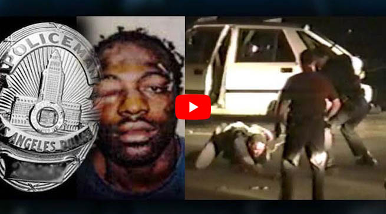
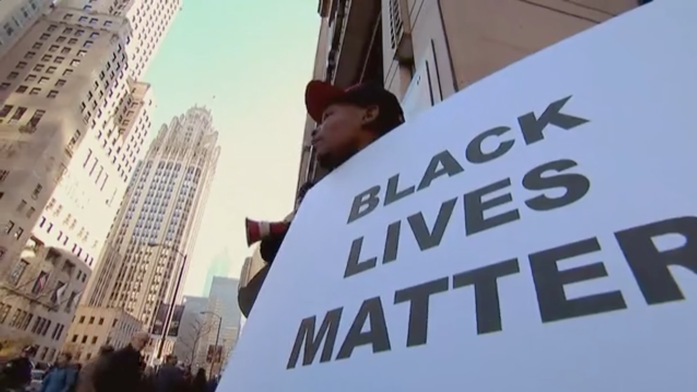

First Ever Viral Video: RODNEY KING BEATING VIDEO
THE VIDEO THAT SHOCKED THE WORLD
MARCH 3, 1991. THE BRUTAL BEATING BY POLICE WILDLY OUT OF CONTROL THAT LED TO 1992 LOS ANGELES RIOTS:
THE RODNEY KING UPRISING.
¨RODNEY KING BEATING VIDEO¨
MultiShoW exclusively license George Holliday´s Rodney King Beating Video.
Contact Roby Massarotto info@rodneykingvideo.com
WORLD +1(818)583-6838 USA | LATAM +54(911)4471-0825 Argentina
WE EXCLUSIVELY LICENSE THE VIDEO FOOTAGE
to all media worldwide
Watch the VIDEO SCREENER
Copyright 1991 by George Holliday. Rodney King Beating Video is a videotape filmed by George Holliday that turned what would otherwise have been a violent, but soon forgotten, encounter between Los Angeles police and Rodney King into the most widely watched and discussed incidents of its kind. The 1992 Los Angeles Riots, also known as the Rodney King Riots are mostly associated with this beating by LAPD. Before there was YouTube , before anyone had ever heard the words "Viral Video" there was Rodney King Beating Video. Rodney King would have lived and died complete unknown, were it not for the most famous home-video ever made Rodney King Beating Video. First Ever Viral Video .
We exclusively license to all media worldwide
Rodney King Beating Video ©1991 by George Holliday
U.S Copyright Registration No. PA0000518451/1991

¨George Holliday (1959-2021) inspired us on how everyday people have the power to document an historic event that might otherwise be overlooked. His famous King's Video was an early example of the citizen journalism to come. It seared into the national consciousness and still remains as one of the most widely watched of its kind.¨
FROM RODNEY KING TO GEORGE FLOYD BLM
RELATED EVENTS
1991 RODNEY KING beating by LAPD. The murder of Latasha Harlins. 1992 LOS ANGELES RIOTS known as the Rodney King Uprising. 1995 O.J SIMPSON verdict given racial tension and mistrust in the police. 2020 GEORGE FLOYD´s murder echoes the memories of Rodney King Beating are still raw.
30 YEARS AND NOTHING HAS CHANGED
The story of George Holliday´s First Ever Viral Video
Watch the VIDEO
This is the story of little known maker of the First Ever Viral Video . George Holliday, the man who pioneered citizen journalism, captured the history-making video that changed television news forever. The major networks shocked Americans showing LAPD officers beating King more than 50 times with wooden batons and shocked him with an electric stun gun. Before the local TV station paid him a cent, it aired the tape on its evening news show. From there, it went viral on the national cable and news networks and became the most famous home video of all time.But Was King and what we saw on that videotape the whole story? Watch the VIDEO
This is the video camera used by George Holliday on 3 March 1991 to record the Los Angeles Police Department beating Rodney King. With this camera, George inspired us on how everyday people have the power to document an historic event that might otherwise be overlooked. His famous King's Video was an early example of the citizen journalism to come. It seared into the national consciousness and still remains as one of the most widely watched of its kind. The Sony Video8 Handycam model CCD-F77, a visual example of the pre-smart phone video cameras in use during the 1990s. Witness of the brutal beating it was retained by the fbi as part of the evidence used in court and then returned to him in 2015.

The story of George Holliday´s First Ever Viral Video
Watch the VIDEO
¨Something Happens between the weddings birthday parties, it´s called the rest of your life¨, Sony´s commercial for the nifty new technology proclaimed in the 90s. ¨That´s why we created America´s most popular camcorder, the Handycam.¨
On those days, almost thirty years ago, a unique icon of Los Angeles police brutality was filmed, which had two main protagonists:
George Holliday, an immigrant escaping from South America who awoke to the sound of sirens and helicopters, hit and recorded on his new Handycam, and preserved one of the most brutal racial moments by LAPD wildly out of control that later triggered the worst race riots in US history.
RodneyKing, whose life was a roller coaster of drug and alcohol abuse and multiple arrests, his videotaped beating by the Los Angeles police in 1991 became a symbol of the national's continuing racial tensions. His pleaded for calm during the 1992 riots in a phrase that became part of American culture: Can we all get along? Then he became a celebrity. A few years ago he was found dead in the swimming pool at the home he shared with his fiance.
Today George Holliday is the only protagonist of the Rodney King Beating with an unknown story to tell: ¨The Other Beating¨. The man who pioneered citizen journalism, captured the history-making video that changed television news forever. His videotaped images rocked this nation's consciousness and remains as one of the most widely watched and discussed incidents of its kind and are still continually required by worldwide media.
The video was a trigger for so many political, artistic and cultural phenomena that the Rodney King Beating is not the only story to tell. Watch the VIDEO
The Other Beating.
A story of an Argentine plumber who immigrated to the US escaping from a turbulent country, Argentina in the 80s with military governments, looking for the American dream, and suddenly gets involved in a case of police brutality, human rights leaders, the media pressure who took advantage of him, court rooms, millionaire demands, unfaithful lawyers and covered settlements.
After KTLA and CNN aired the video television stations around the world quickly picked it up "My phone blew up. Everybody wanted to interview me and get a copy of the tape". There was a sea of reporters every day, George recalled. My wife Maria didn't even want to leave the house. He may have pioneered citizen journalism,but he was swallowed up and spit out by CNN, gave him little credit and no compensation for his contribution to history.
Without a doubt, this accidental citizen journalist was exploited by CNN and the rest of the media The Los Angeles riots were modern America's deadliest, with 53 killed. Damages exceeded $1 billion. Coming as they did in the spring of 1992, the riots derailed Bush's re-election campaign and boosted Bill Clinton's election efforts. As a result, one could say that George Holliday may have ended one presidency, launched another, and helped ensure that today's leading Democratic contender, Hillary Clinton, would have an eight-year head start to her political career. Not bad for plumber using his new toy.
¨People have blamed me for the disturbances. What is on the tape caused them, not the tape¨
You are the guy who caused the riots. George received death threats and was constantly hounded by the media "Be careful when you start your car.
Rodney King wins a $3.8 Million settlement from the City of Los Angeles
However, one person later thanked him. In late 1991 Holliday stopped at a gas station and a young black man in a new sports car pulled up at the same pump: "Hey, George Holliday," the man said. "You do not recognize me, do you?" Suddenly, he realized it was Rodney King. "I just wanted to thank you. You saved my life." They shook hands and said goodbye.
The images of the Rodney King Beating Video were seared into the American consciousness: A black man struggling on the ground while Los Angeles police officers stood in a semicircle around savagely kicking and shocking him with an electric stun gun, landing 56 baton blows to his body, battering and bloodying him. Black leaders rallied behind Rodney King immediately. They say,
"Seeing the Rodney King beating was like seeing history repeated again and again."

The influence of the video in the American society
A prosecutor who was absolutely convinced that it was an open-and-shut case based on the George Holliday video, which showed King being beaten by the police. Little did he realize that by re-editing the images, the attorneys defending the L.A. police officers, in the first criminal case, totally changed the story. Ever since, the beating of Rodney King and the ensuing riots have formed a somber backdrop to America's "dialogue" on race. The beating itself, and the initial exoneration of LAPD officers by a suburban Simi Valley jury, supported the notion that America remained a deeply racist society.
Movies, music, TV
The powerful echoes of which we see on display in American TV and Cinema which uses actual footage from the King video such as: Natural Born Killers, Strange Days, Mace, Malcom-X, Dark Blue, Straight Outta Compton, Wu-Tang: An American Saga, and the American Crime Story/O.J. Simpson Trial,¨Fox producers decided to open with the Rodney King beating and the 1992 Los Angeles riots, laying the groundwork for Mr. Simpson's defense in a trial that largely served as a referendum on the Los Angeles Police Department treatment of blacks.¨ as NY Times states in its article. The verdict exonerating him was clearly marked by the King beating and the riots in a context of racial tensions and mistrust of police. Today the Rodney King Beating Video is still remaining as an unique reference.
Politics
The Riots occurred just four days after Operation Desert Storm had ended triumphantly. With a 90 percent approval rating in the polls, President George H.W. Bush expected an easy re-election in 1992. Rodney King emerged as a great American healer, demonstrating more effective leadership than President Bush during the rioting by pleading: People, I want to say, can we all get along?
Educational
Rodney King Beating Video is a continuous matter of study in most schools and universities of the U.S. It turned what would otherwise have been a violent, but soon forgotten, encounter between Los Angeles police and Rodney King into one of the most widely watched and discussed incidents of its kind.
GH: One day my son came home from school and said, "Dad, you are in my history book."
Rodney King Beating Video ©1991 by George Holliday U.S Copyright Registration No. PA0000518451/1991
Rodney king Beating Video and pictures displayed on this page are protected by US Copyright Law and the Berne Convention. No use, reuse, copying or reproduction is allowed without specific agreement and permission.

Repeated viewings of those images created within the American subconscious a particular code for the representation of racial conflict.
The Holliday tape is shown so often on world wide television that one CNN executive calls it "wallpaper." It is a continuous matter of study in most schools and universities of the U.S.
A dramatic encounter with a stranger and the Los Angeles police. Rodney King was pulled over by the police in Los Angeles, had an angry verbal confrontation with the officers, and was then brutally assaulted by several of them. Public servants gone wildly out of control, savagely kicked King, landed 56 baton blows to his body, battering and bloodying him. The beating was so loud and raucous, in fact, that it caught the attention of George Holliday in his nearby apartment. He got out of his bed and went to his window, where he witnessed the horrible scene. Holliday immediately went to get his video camera, and he captured the whole awful episode on tape.
Holliday reflects on how he did not realize how newsworthy his video of the Rodney King beating would be. He explains, "Coming from Argentina, it's different over there. If a criminal commits a crime, you know, the police take him in and they take care of him. For me, that's normal because that's the way I grew up." But Holliday was curious about what he had witnessed, so when the L.A. police would give him no details, he called local television station KTLA. Those videotaped images rocked this nation's consciousness.
The images of the Rodney King Beating Video were seared into the American consciousness: a black man struggling on the ground while Los Angeles police officers stood in a semicircle around him, beating him for 19 brutal seconds. Black leaders rallied behind Rodney King immediately. They say, "Seeing the Rodney King beating was, like, seeing history repeated again and again."
A prosecutor who was absolutely convinced that it was an open-and-shut case based on the George Holliday video, which showed King being beaten by the police. Little did he realize that by re-editing the images, the attorneys defending the L.A. police officers, in the first criminal case, totally changed the story. One year later, in the same city, different images: angry fists and faces, broken glass and flames, 54 dead, 2,000 injured and a city tearing itself apart before the world. Ever since, the beating of Rodney King and the ensuing riots have formed a somber backdrop to America's "dialogue" on race. The beating itself, and the initial exoneration of LAPD officers by a suburban Simi Valley jury, supported the notion that America remained a deeply racist society. Today the Rodney King Beating Video is still remaining as an unique reference.
The powerful echoes of which we see on display in American cinema as Natural Born Killers (which uses actual footage from the King video), The People v. O.J Simpson: American Crime Story, Straight Outta Compton, Strange Days, Mace, Malcom-X, Dark Blue, and The Matrix Reloaded, in which the beating of the main character "Morpheus" seeks to draw upon its audience's familiarity with the Rodney King beating. the codes inherent to the historical representation of racial conflict.
Due to a recent ruling by the Massachusetts Supreme Court, Chief Justice stated in her dissent that, had the King incident occurred in Massachusetts, "...under today's ruling Holliday would have been exposed to criminal indictment rather than lauded for exposing an injustice."
Rodney King Beating Video
WE EXCLUSIVELY LICENSE the footage to All Media Worldwide
The footage second-by-second
- Briseno puts his hand in front of Powell, who is ready to strike King.
- Powell strikes King in the back as he attempts to rise.
- Briseno stomps on King's shoulder, forcing King's face down.
- King begins to get up from his hands and knees.
- King is up and charges in the direction of Powell.
- Powell hits King in the shoulder area with his baton and King falls on his face.
- King hit by numerous blows from Powell to various parts of his body, probably including one blow to the head.
- King is on his stomach. No blows are struck.
- Powell has baton raised and appears ready to strike King. Briseno puts his hand in front of Powell.
- King is rising. Powell strikes King in arms and chest.
- Wind strikes King near buttocks.
- After Powell strikes King in upper chest, King topples over and turns.
- Powell strikes King in arm and shoulder area.
- Powell strikes King in back while King attempts to rise.
- Powell hits King in left arm as King rises from his knees.
- Wind swings at King as King begins to fall.
- King falls. His face appears to hit asphalt.
- Powell strikes King on knee, while Wind hits King in shoulder.
- King's head his up. Powell and Wind deliver hard blows to King's back, buttocks, and thighs.
- King rolls to left and cocks right leg.
- After two-second break, officers resume force, striking King's legs.
- King lifts his upper torso.
- Powell strikes King's ankle while Wind strikes his back.
- King rolls on ground while Koon puts arms in form of cross, showing the position he wants King to assume.
- King, on his back, cocks his left leg.
- King rolls as Powell strikes his hand.
- Powell reaches for his handcuffs.
- King raises his torso. Briseno stomps on Kings shoulder and Kings head hits asphalt.
- Briseno points to King. Powell and Wind strike King's right arm.
- King is on his hands and knees.
- Wind strikes King's back three times.
- Powell strikes King's left arm.
- Wind delivers three kicks to King's shoulder and back area.
- Video back in focus. Powell swings at King.
- King is sitting on his calfs. Koon is pointing at King.
- King puts his hands on his head.
- Briseno begins handcuffing King.
- King is put in handcuffs after officers.
RODNEY KING BEATING VIDEO
Rodney King Beating Video ©1991 by George Holliday U.S Copyright Registration No. PA0000518451/1991
We exclusively represent George Holliday´s Rodney King Beating Video and license the footage to all media worldwide.
For information you may contact:
Roby Massarotto
info@rodneykingvideo.comMultiShoW Television & Multimedia.
info@multishowtv.com.arWORLD +1(818)583-6838 USA
LATAM +54(911)4471-0825 Argentina
Roby Massarotto / www.multishowtv.com.ar